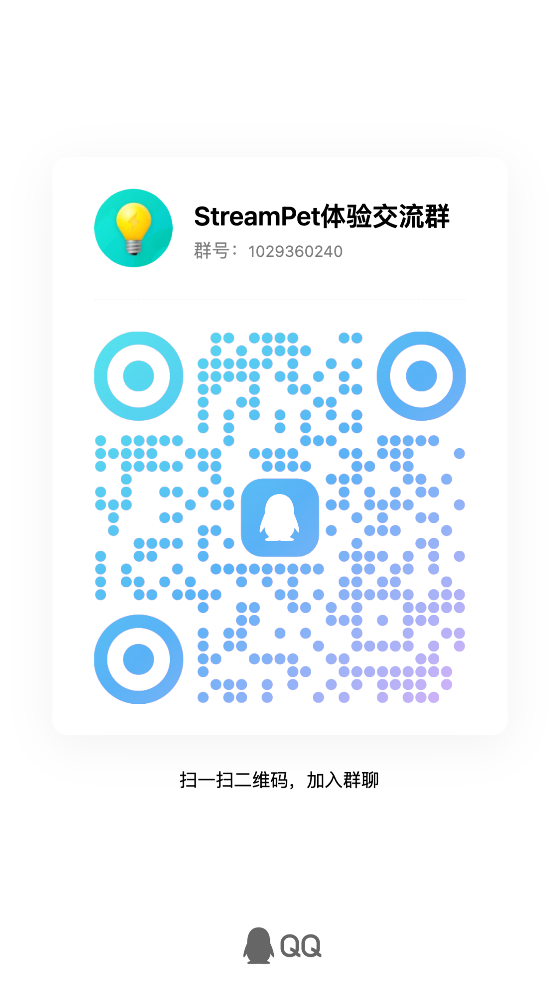

先理解，你的“这个”。
CONTEXT当前屏幕、选中的文字，或刚刚拖入的截图与文件，都能成为交流的上下文。少一点复制粘贴，多一点直接开口。
试着说：帮我解释一下这张图。
YOUR DESKTOP, WITH COMPANY
一个常驻桌面的 AI 工作搭子。
看你正在看的，聊你正在想的，
也帮你把手头的小事往前推进。
Windows x64CUDA 与 Universal 双版本
无需 NearMate Key，可在应用内申请试用A COMPANION THAT GETS IT
NearMate 承载你选择的角色，
让交流和行动发生在日常工作的旁边。
当前屏幕、选中的文字，或刚刚拖入的截图与文件，都能成为交流的上下文。少一点复制粘贴，多一点直接开口。
试着说：帮我解释一下这张图。
用角色卡定义身份和语气，搭配 Live2D 虚拟形象与语音。想打字就打字，想说话就说话，以你舒服的方式合作。
从角色卡开始，找到合拍的相处方式。
需要处理材料、整理文件或完成多步骤操作时，配置后台工作并给出授权，让当前角色调用工具推进任务。进展和结果可以随时查看。
试着说：根据这份材料，整理一份待办清单。
MAKE YOURSELF AT HOME
安装后，跟着应用里的向导走。
把角色和模型准备好，就可以开始了。
无需先填写 NearMate Key。是否可领取，取决于服务开放时间、每日额度与设备资格；请以应用内结果为准。
NVIDIA 显卡可选 CUDA；其他设备可查看 Universal。把同一版本的所有分卷放在同一文件夹，再运行安装程序。
在软件内申请试用或填写 NearMate Key，然后配置模型 API。模型 API 需自行准备，使用费用由厂商单独收取。
按向导检查电脑、下载所需语音模型并完成试听。设置角色后，就能在桌面开始交流。
A PLACE ON YOUR DESKTOP
选择适合这台电脑的安装包。
安装文件发布后，将在这里提供直接下载。
安装文件发布后，将在这里提供直接下载。
分卷安装，文件要放在一起。
请逐个下载所选版本的全部文件（.exe 与 .bin），放在同一文件夹中，保留原文件名，然后运行 .exe。两个版本的分卷不能混用。
NearMate 是让角色贴近电脑任务的运行环境。你可以用角色卡设置当前角色的身份和语气，再选择虚拟形象与语音。官网上的人物是品牌形象，实际角色由你在应用里配置。
试用覆盖 NearMate 产品使用资格，不提供模型厂商的 API 额度。模型 API 需要自行准备，厂商会单独计费。试用可在应用内申请，无需先填写 NearMate Key；领取资格受服务开放时间、每日额度与设备资格限制，每次新启动试用会话都需要联网。
CUDA 版面向配备兼容 NVIDIA 显卡的电脑。Universal 版提供 DirectML、Vulkan 与 CPU 运行路径，适合查看其他设备的支持情况。两个版本的功能目标一致，但运行环境不同。安装后请通过向导检查设备与模型要求；实际速度取决于硬件和所选模型。
安装包采用分卷发布。请下载同一个版本下的安装程序和全部 .bin 文件，把它们放进同一文件夹，保留原文件名，再双击 .exe。缺少任意一个分卷都无法完成安装。SHA256 校验文件可用于核对下载内容是否完整。
NearMate 在本机运行桌面界面和部分语音能力，但模型推理、授权及后台工作可能访问外部服务。对话和选用的屏幕、材料内容会按功能需要发送给已配置的服务。请结合对应厂商的数据政策，决定使用哪些材料与服务。
当前版本会在后台进程运行期间保留近期对话和任务上下文，用来衔接交流；退出后台进程后，这些运行期记忆不会继续保留。角色卡与设置单独保存。
需要。在控制台的“后台工作”设置中配置相应服务、凭据与主模型，再选择适合的权限。任务需要权限或补充资料时，会在界面中请求你的决定；执行情况和交付结果可在活动记录中查看。
A LITTLE COMPANY, TOGETHER
分享角色搭配，聊聊使用方法，
也把遇到的问题带给我们。
QQ 体验交流群1029360240
用手机 QQ 扫码，或搜索群号加入。
通过 GitHub 反馈问题